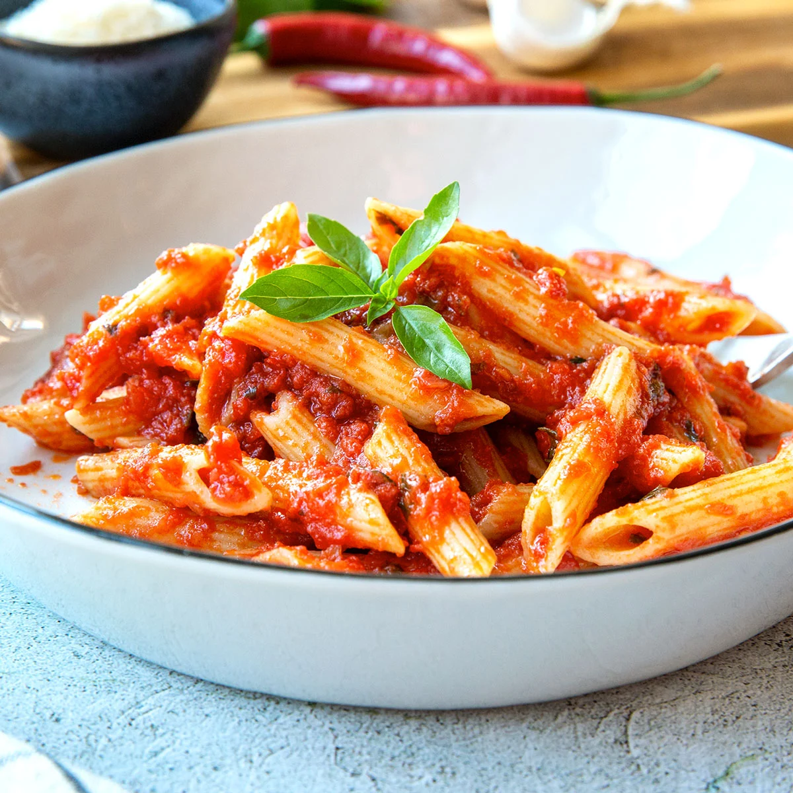

Penne Arrabbiata Recipe
Ingredients:
- 400g penne pasta
- 2 tablespoons olive oil
- 4 cloves garlic, minced
- 1 teaspoon red chili flakes
- 400g canned crushed tomatoes
- Salt & black pepper to taste
- Fresh parsley, chopped
- 50g parmesan cheese, grated
Instructions:
- Cook penne pasta in salted boiling water until al dente, then drain.
- In a pan, heat olive oil and sauté garlic until fragrant.
- Add chili flakes and cook for 30 seconds.
- Pour in crushed tomatoes, season with salt and pepper, and simmer for 10 minutes.
- Toss in cooked pasta, stirring well to coat with the sauce.
- Garnish with fresh parsley and parmesan cheese before serving.